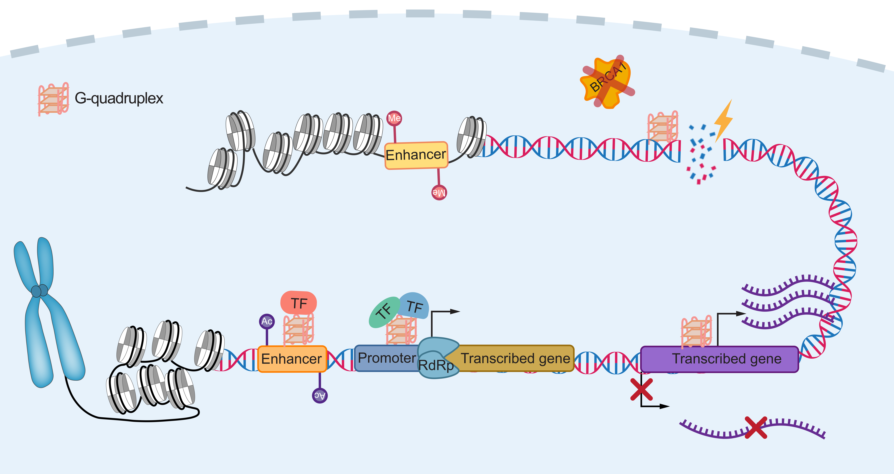

About
Bonjour! I’m Rongxin. Welcome!
I am currently a postdoctoral scholar in Dr. Li Wang’s lab at Stanford University 🇺🇸, where I study brain cancer through the lens of neurodevelopmental biology. Prior to this, I received my Ph.D. from the State Key Laboratory of Digital Medical Engineering at Southeast University 🇨🇳, during which I did part of my Ph.D. training in Dr. Jean-Louis Mergny’s lab at École Polytechnique in France 🇫🇷.
My Ph.D. projects involved uncovering the regulatory role of G-quadruplexes (G4s), special non-B nucleic acid secondary structures, and their implication in diseases.

Moving forward, and with the goal of unlocking the secrets hidden within the “Book of Heaven” (the human genome), my research interests lie in the analysis and interpretation of large-scale human multi-omics data through bioinformatics approaches. More specifically, I aim to understand and elucidate the regulatory mechanisms of the human genome, for example the impact of sequence variants and chromatin-level regulatory features on genome function, and how their dysregulation contributes to the development and progression of human diseases, such as cancer. In addition, I am passionate about applying machine learning methods to model and address unresolved challenges in biology and medicine.
Selected Works
-
2025
G-quadruplex structures as modulators of alternative promoter usage Research Article
-
2025
G4SNVHunter: An R/Bioconductor Package for Evaluating SNV-Induced Disruption of G-Quadruplex Structures Leveraging the G4Hunter Algorithm Research Article
-
2024
G-quadruplexes as pivotal components of cis-regulatory elements in the human genome Research Article
-
2023
G-quadruplex structures are key modulators of somatic structural variants in cancers Research Article
-
2021
Biological Data Analysis and Practice Book
-
2020
Whole Genome Identification of Potential G-Quadruplexes and Analysis of the G-Quadruplex Binding Domain for SARS-CoV-2 Research Article
Talks
-
2024
Structure Matters: Unraveling G-Quadruplex Influence on Regulatory Elements
Shanghai, China
-
2022
Integrative analyses reveal G-quadruplex structure as a key modulator of cancer genome instability
Nanjing, China
-
2021
Genomic distribution and potential role of RNA G-quadruplexes in SARS-CoV-2
Nanjing, China